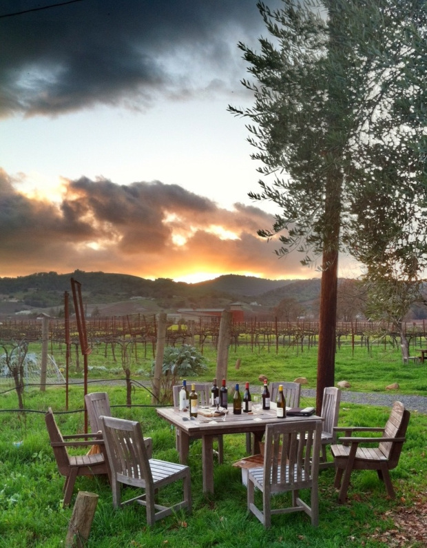

Matthiasson Winery
Source: Ted's Wine Blog
This wine is our conception of a mythical “ideal” wine…a California wine with a spiritual connection to Friuli, Italy, but also drawing inspiration from the great whites of the Loire, Burgundy, Graves, Alsace, the Rhone, old-school Napa and Sonoma…actually the list of great whites we are inspired by goes on and on, and it is all wrapped up in this wine. This wine is an attempt at getting at the core of what white wine is all about, the archetypal “white wine,” thus the name. It’s a very intentional blend of four varieties from two vineyards.
-Matthiasson Winery